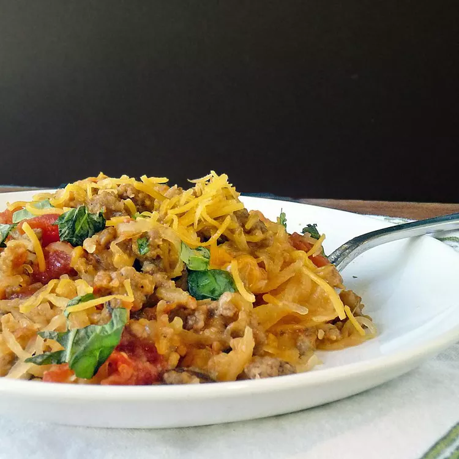

Baked Spaghetti Squash with Beef and Veggies

Description
Baked spaghetti squash, peppers, and onions are mixed with
beef and cheese in this delicious casserole.
ingredients
- 1 spaghetti squash, halved and seeded
- 1 pound ground beef
- ½ cup diced green bell pepper
- ½ cup diced red bell pepper
- ¼ cup diced red onion
- 1 clove garlic, chopped
- 1 (14.5 ounce) can Italian-style diced tomatoes, drained
- ½ teaspoon dried oregano
- ½ teaspoon dried basil
- ¼ teaspoon salt
- ¼ teaspoon ground black pepper
- 2 ¼ cups shredded sharp Cheddar cheese
Home
Top